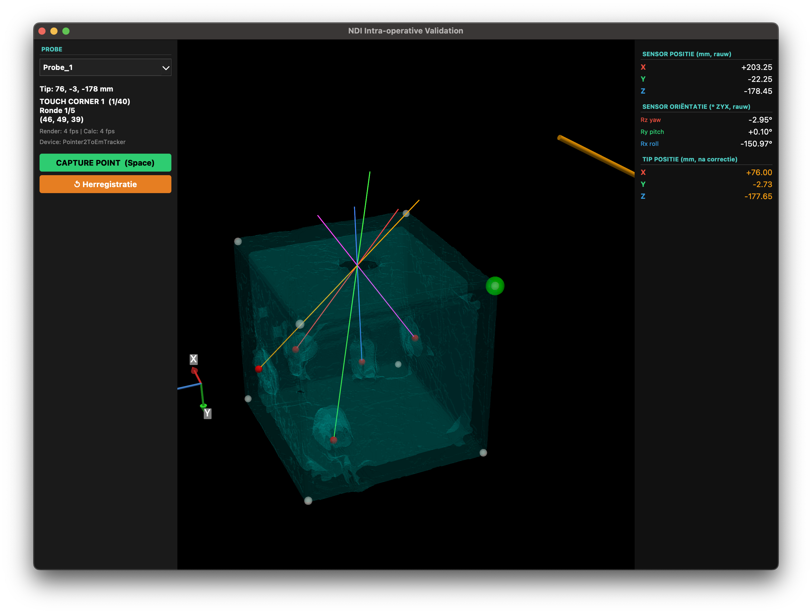

Clinical Motivation: High-precision surgical navigation requires instantaneous point mapping to align pre-operative planning profiles with the dynamic intra-operative patient context.
System Deliverable: An integrated, low-latency surgical framework utilizing EM sensor systems to translate physical instrument coordinates into 3D rendering domains.
Core Research Question: Can an algorithmic pipeline successfully combine density analysis with dual-pass image registration to automate coordinate alignment and eliminate manual point registration bias?
To establish target arrays from Pre-op CT imaging, an automated segmentation workflow extracts anatomical landmarks while minimizing the intrinsic Fiducial Localization Error (FLE):
To establish perfect alignment, initial volumes are aligned via Center-of-Gravity matching before executing a robust Dual-Pass Registration Pipeline using ITK-Elastix:
The intra-operative application leverages a multi-threaded architecture to separate sensor measurement estimation from rendering loops:

The Target Registration Error (TRE) evaluates the Pre-op to Intra-op Image Registration by matching mathematical plan projections against ground-truth structures, independent of EM tracking noise:
| Anatomical Landmark | dX (mm) | dY (mm) | dZ (mm) | Total Error (mm) |
|---|---|---|---|---|
| Planned Entry Point | 0.08 | 0.95 | 0.61 | 1.13 |
| Fiducial Bead 1 | 7.93 | 4.27 | 0.91 | 9.06 |
| Fiducial Bead 2 | 0.07 | 3.86 | 0.81 | 3.94 |
| Fiducial Bead 3 | 5.78 | 2.16 | 0.60 | 6.20 |
| Fiducial Bead 4 | 3.08 | 1.82 | 1.56 | 3.91 |
| Fiducial Bead 5 | 3.20 | 4.18 | 4.26 | 6.77 |
| Mean Box Corners (1-8) | 0.70 | 0.86 | 1.72 | 2.31 |
Measured FRE (this study): 16.09 mm
Error Amplification (High FRE): The measured FRE of 16.09 mm is largely attributed to ambient EM measurement noise, potential sensor miscalibration, and a narrow registration baseline. The target points (box corners) are only 5 cm apart; because of this small spatial distribution, any noise in the EM coordinates causes severe inaccuracies in both the calculated translation and rotation matrices.
Geometric Constraint (Cube-Fit): To suppress this severe tracking jitter, an experimental noise-reduction algorithm was implemented that forces noisy EM measurements into a mathematically perfect 50mm cube prior to registration. Limitation: This algorithm assumes the physical phantom is perfectly axis-aligned with the EM tabletop generator; arbitrary rotations would cause severe spatial distortions.
Conclusion: A fully automated surgical EM navigation pipeline was engineered. By combining automated density analysis with multi-resolution B-Spline registration, the system minimizes FLE and delivers highly robust trajectory tracking within responsive 3D environments.